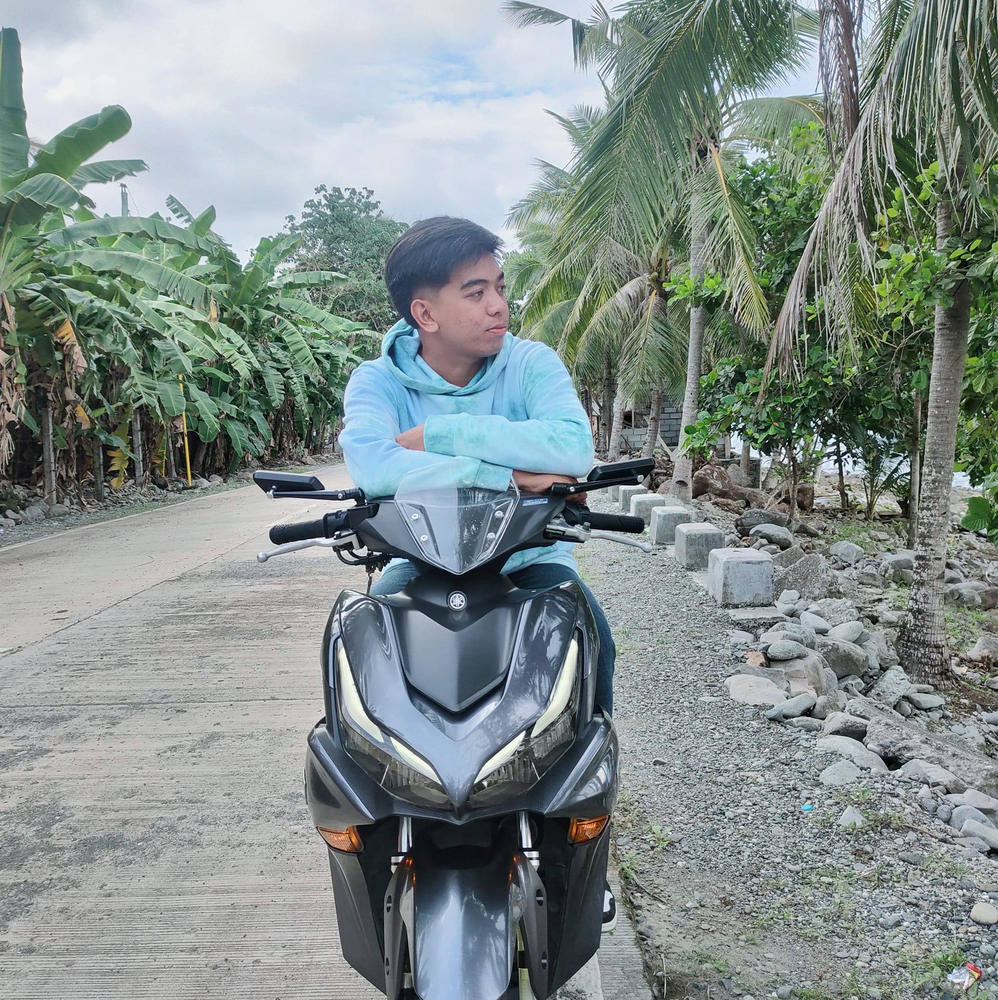

Welcome to my site
Hi, I’m mark, a Designer
As a dedicated computer science student with a passion for problem-solving and innovation, I possess a strong foundation in programming languages such as Java and Python. Eager to apply theoretical knowledge gained in coursework to real-world challenges. Proven ability to collaborate in team environments, coupled with excellent communication skills. Seeking opportunities to contribute to cutting-edge projects and further enhance skills in software development and artificial intelligence.